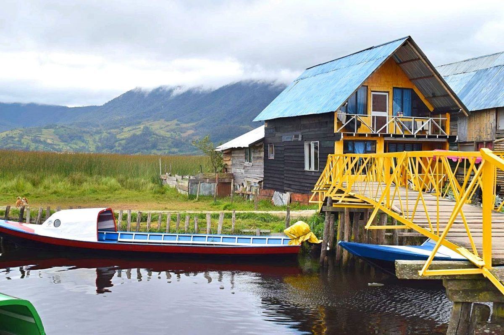
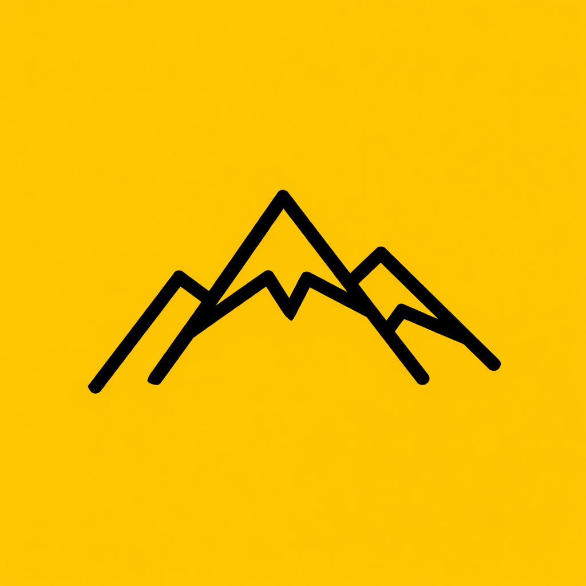
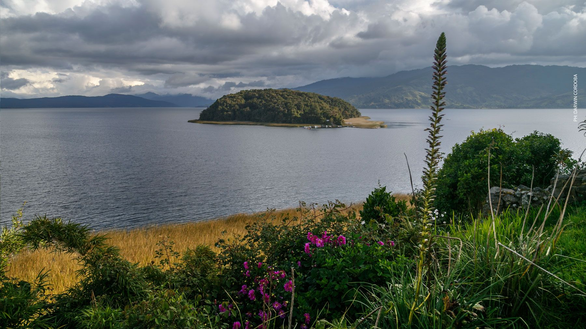
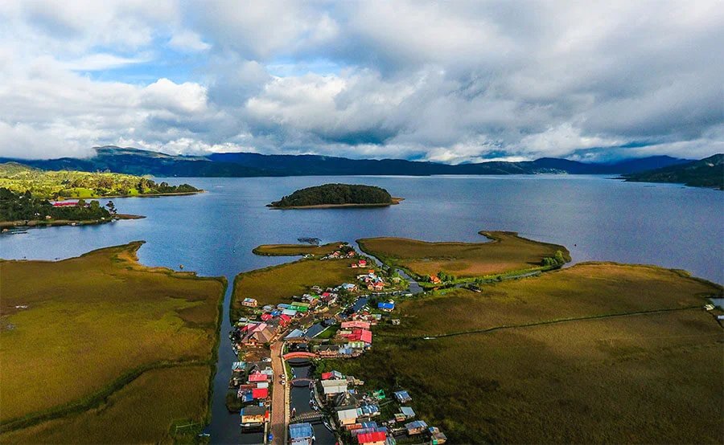
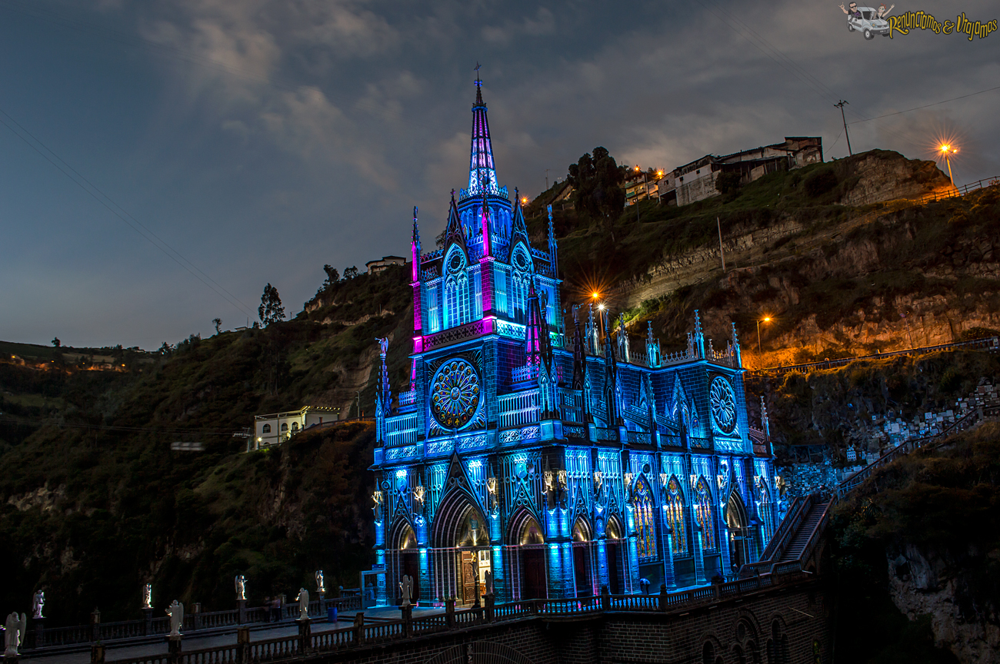

Carnaval de Negros y Blancos
El Carnaval de Negros y Blancos es una celebración cultural que refleja la riqueza y diversidad del patrimonio inmaterial de la humanidad.
El Carnaval de Negros y Blancos es una celebración cultural que refleja la riqueza y diversidad del patrimonio inmaterial de la humanidad.
El Carnaval de Negros y Blancos se celebra en la ciudad de Pasto, al sur de Colombia, en una región influenciada por la cultura andina. Esta festividad se destaca por sus carrozas monumentales, la creatividad artesanal y la riqueza simbólica que refleja la identidad cultural del territorio.

Esculturas gigantes llenas de color y detalle que representan mitos, naturaleza y tradiciones culturales.

La expresión artística de los participantes refleja la riqueza cultural y la imaginación única del sur andino.

Danzas, música y vestuarios que transmiten la alegría colectiva y el sentido de identidad del pueblo andino.

La cosmovisión andina es una forma de entender el mundo que se basa en la interconexión entre la naturaleza, la cultura y la espiritualidad. En esta visión, los elementos naturales como las montañas, los ríos y los animales son considerados seres vivos con los que las personas tienen una relación de respeto y reciprocidad.

Relación espiritual con el entorno

Raíces geográficas y culturales

Expresión colectiva del pueblo
Imágenes que capturan la esencia del la identidad cultural y artística del territorio andino, mostrando la diversidad de expresiones culturales presentes en el Carnaval.





